Meldungen
Über die linke Knopfleisten können Sie durch die einzelnen Hauptfunktionen von JAuswertung blättern. Je nach ausgewählten Knopf wird die entsprechende Funktion aktiviert. Beachten Sie, dass einige Funktionen nicht immer aktiviert sind. Wenn die gesamte Funktionalität hinter einem Knopf deaktiviert ist, erscheint eine kurze Information darüber, wann diese Funktionalität genutzt werden kann.
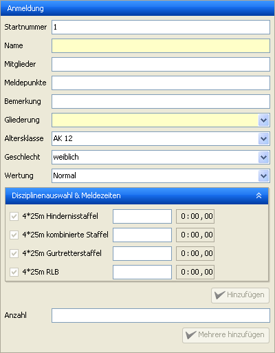
JAuswertung - Schwimmereingabe
Durch einen Klick auf "Eingabe" wird die Eingabe von Teilnehmern oder Mannschaften aktiviert. Je nach aktuellem Wettkampf unterscheidet sich das Aussehen des Fensters, da bei einem Mannschaftswettkampf kein Vor- und Nachname existiert. Gelbe Felder müssen ausgefüllt werden, weiße Felder können freigelassen werden. Wird keine Startnummer eingetragen, so wird automatisch die nächste freie Startnummer für den Schwimmer gewählt.
Bei Mannschaftswettkämpfen können Sie auch mehrere Mannschaften einer Gliederung auf einmal hinzufügen. Geben Sie dazu wie gewohnt die Daten in den oberen Feldern ein. Zusätzlich schreiben Sie dann in das Feld Anzahl die gewünschte Menge an Mannschaften und klicken auf den Hinzufügen-Knopf darunter. Die eingefügten Mannschaften werden automatisch durchnummeriert. Wenn Sie also als Name "Musterort" gewählt haben, werden die Mannschaften "Musterort 1", "Musterort 2", ... genannt. Beachten Sie dabei aber, dass die Mannschaften bis auf den Namen identisch sind. Sie sind also alle in der gleichen Altersklasse und nehmen mit den gleichen Meldezeiten an den gleichen Disziplinen teil.
Hinweis: Wenn Sie neue Teilnehmer oder Mannschaften zu einem Wettkampf hinzufügen, nachdem Sie eine Laufliste erstellt haben, werden diese nicht automatisch in die Laufliste einsortiert. Sie können diese aber über den Lauflisteneditor manuell einsortieren, oder eine neue Laufliste erstellen.
Hier wird die aktuelle Meldeliste dargestellt. Über die Felder im linken Teil kann die Auswahl der dargestellten Teilnehmer bzw. Mannschaften eingeschränkt werden. Dabei sind die Textfelder Filter, dass heißt gibt man z.B. nur den Buchstaben g ein, werden alle Teilnehmer bzw. Mannschaften angezeigt, die den Buchstaben g im Namen tragen. Sind alle Felder leer, werden alle Teilnehmer bzw. Mannschaften dargestellt. Durch einen Rechtsklick auf einen Teilnehmer bzw. eine Mannschaft wird ein Kontextmenü geöffnet, dass das Bearbeiten und Löschen erlaubt, es können hier aber auch Strafen vergeben werden.
Meldungen

Meldungen: Rechtsklick

Meldungen: Laufanzeige
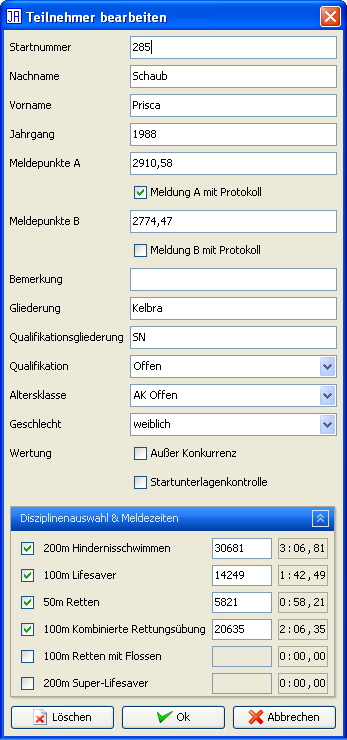
Meldungen: Teilnehmer/Mannschaft bearbeiten
Meldungen
Die Fenster zur Bearbeitung von Teilnehmern und Mannschaften unterscheiden sich nur geringfügig und sind im Wesentlichen selbserklärend.
Die Menüpunkte "Disqualifizieren", "Ausschluss" und "Nicht Angetreten" fügen dem ausgewählten Schwimmer bzw. der ausgewählten Mannschaft für alle Disziplinen diese Strafe hinzu. Über den Menüpunkt "Strafe vergeben" können Sie über einen Assistenten eine genauere Strafe vergeben.
Hier können Sie Zeiten einzelner Schwimmer eingeben. Dazu können Sie im Bereich "Auswahl" angeben, welche Disziplin eingetragen werden soll und wie viele Schwimmer gleichzeitig angezeigt werden können. Über den Knopf "weiter" werden alle Felder wieder freigegeben. Diese Knopf verändert keine Daten, er schaft lediglich Platz für neue Eingaben. Im Bereich "Status" werden ggf. Eingabefehler angezeigt, dies soll nur zu ihrer Orientierung dienen.
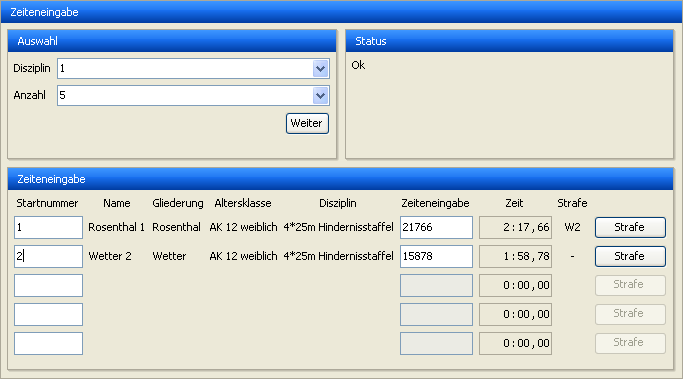
Zeiteneingabe mit fehlerhaften Angaben
Im Bereich "Zeiteneingabe" findet die eigentlich Eingabe statt. Sie können in einem der Felder unter "Startnummer" die Startnummer eines Schwimmers eingeben. Genauere Angaben zu dem Schwimmer erscheinen dann direkt neben diesem Feld und das Feld unter "Zeiteneingabe" wird aktiviert und Sie können direkt eine Zeit eintragen. Beachten Sie, dass die Eingabe der Zeit direkt durchgeführt wird. Wenn Sie also eine Zeit von 1:23,4 eingeben, wird der entsprechende Schwimmer kurzzeitig eine Zeit von 0:00,1 dann von 0:01,2 dann von 0:12,3 und anschließend die richtige Zeit haben.
Es stehen zur einfacheren Eingabe folgende Tastaturkürzel in den Feldern zur Zeiteneingabe zur Verfügung:
"c" öffnet den Dialog, um eine Strafe nach Fehlercode zu vergeben. Diese Strafe wird zu bestehenden Strafen hinzugefügt.
"d" fügt dem Teilnehmer/der Mannschaft eine "Disqualifikation" hinzu
"n" setzt den Teilnehmer/die Mannschaft auf "Nicht angetreten" (allerdings nur wenn keine Zeit eingegeben wurde)
"p" öffnet ein Fenster zur Eingabe von Strafpunkten. Diese werden zu bestehenden Strafpunkten addiert.
"#" entfernt eingegebene Strafen
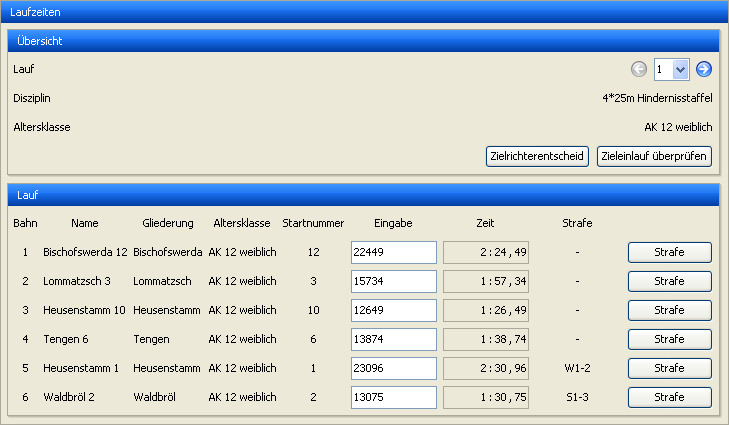
Laufzeiten
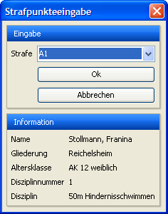
Strafenvergabe mittels Code

Strafeneditor

Strafeneditor mit nicht gewählter Disziplin (z.B. in derAK Offen)
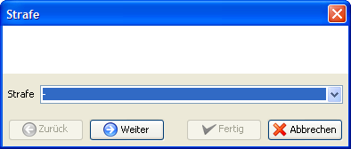
Strafenassistent: Code
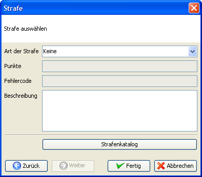
Strafenassistent: Details
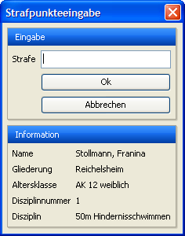
Strafpunkte vergeben
Die Funktionen der "Laufzeiten" stehen nur zur Verfügung wenn auch die Laufliste mit JAuswerung verwaltet wird, ermöglicht aber die höchstmögliche Eingabegeschwindigkeit. Über den Punkt "Lauf" im Bereich "Übersicht" können Sie direkt den Lauf auswählen, den Sie eingeben möchten. Im Rest des Bereichs "Übersicht" werden nähere Informationen zu dem entsprechenden Lauf dargestellt. Im Bereich "Lauf" werden die einzelnen Teilnehmer in der Reihenfolge ihrer Bahnen aufgelistet und Sie können direkt die Zeiten in dieser Reihenfolge eingeben. Die Eingabe der Zeit wird direkt durchgeführt und das Ergebnis aktualisiert.
Es stehen zur einfacheren Eingabe folgende Tastaturkürzel in den Feldern zur Zeiteneingabe zur Verfügung:
"c" öffnet den Dialog, um eine Strafe nach Fehlercode zu vergeben. Diese Strafe wird zu bestehenden Strafen hinzugefügt.
"d" fügt dem Teilnehmer/der Mannschaft eine "Disqualifikation" hinzu
"n" setzt den Teilnehmer/die Mannschaft auf "Nicht angetreten" (allerdings nur wenn keine Zeit eingegeben wurde)
"p" öffnet ein Fenster zur Eingabe von Strafpunkten. Diese werden zu bestehenden Strafpunkten addiert.
"#" entfernt eingegebene Strafen
"z" oder "," zeigen den Zieleinlauf des aktuellen Laufs an
Der Knopf "Zielrichterentscheid" ermöglicht den Zugriff auf eine Funktion, die durch das DLRG-Regelwerk von 2008 eingeführt wurde. Die Beschreibung dazu finden Sie unter jauswertungmenus#zielrichterentscheid
Hinweis 1: Mit den Cursor-Tasten können Sie zwischen den Bahnen und Läufen wechseln.
Hinweis 2: Mit der Taste <Enter> können Sie die Eingabe einer Zeit beenden und zur nächsten Bahn wechseln. Wenn Sie die letzte Zeit eingegeben haben, wird automatisch der Zieleinlauf angezeigt.
Die Eingabe der HLW-Punkte funktioniert nach dem gleichen System wie die Eingabe der Zeiten mit der "Zeiteneingabe". Als Besonderheit ist jedoch anzumerken, dass obwohl ein Teilnehmer bzw. eine Mannschaft gefunden wurde, dass Feld "HLW-Punkte" deaktiviert bleiben kann. Ist dies der Fall ist der Schwimmer in einer Altersklasse, in der keine HLW durchgeführt wird. Dieses Problem wird ebenfalls im Bereich "Status" angezeigt.
Bei der Eingabe von Mannschaften können die Punkte für jeden Schwimmer einzeln eingegeben werden. Dazu muss an die Startnummer ein Buchstabe "a", "b", "c" oder "d" angehängt werden. Der entsprechende Buchstabe wird automatisch auf die HLW-Startkarten gedruckt. Die ersten vier Schwimmer eine Mannschaft sind für die HLW vorgesehen. Der fünfte Schwimmer nimmt nicht an der HLW teil.

Eingabe von HLW-Punkten
Hinweis: Bei der HLW-Eingabe ermöglichen es die Texte "n" und "n.a." einen Schwimmer als "Nicht angetreten" zu markieren. Mit "d" kann ein Schwimmer als disqualifiziert markiert werden.
JAuswertung druckt auf ausgeüllte HLW-Checklisten und -Startkarten zwei Barcodes. Ein Barcode steht für "Bestanden" und der andere für "Nicht bestanden". Die Barcodes können mit handelsüblichen Barcode-Scanners erkannt werden. Wird ein Barcode für einen Teilnehmer eingescannt, der bestanden hat, leuchtet "200 Punkte" in grün auf. Hat der Teilnehmer nicht bestanden, leuchtet "0 Punkte" in rot auf. Ist der Barcode nicht korrekt, leuchtet "Barcode nicht korrekt" in orange auf. Zusätzlich werden in den ersten beiden Fällen weitere Informationen zu dem erkannten Teilnehmer angezeigt.
Hinweis: Nicht alle Barcode-Scanner simulieren eine Tastatur.
Hinweis: Geeignete Barcode-Scanner (1D-Code-Scanner) simulieren eine Tastatur. Achten Sie deshalb darauf, dass der Fokus auf das Eingabefeld gesetzt ist, wenn Sie einen Barcode scannen.
Hinweis: Sie können diese Funktion auch ohne Barcode-Scanner nutzen. Tippen Sie dazu einfach die Ziffern unter dem Barcode in das Feld "Eingabe" und bestätigen Sie mit <Enter>. Die Barcodes enthalten eine Checksumme und sind daher gegen Vertipper besser als die normale HLW-Eingabe abgesichert.

HLW-Barcodes
In diesem Bereich können mit JTeams ausgedruckte Mannschaftsmeldebögen zur Meldung von Mannschaftsmitgliedern eingescannt werden. Der dort abgebildete QR-Code enthält alle Informationen, um die eingegebenen Mannschaftsmitlieder der richtien Mannschafts zuzuordnen.
Hinweis: Nicht alle 2D-Code-Scanner simulieren eine Tastatur.
Hinweis: Geeignete 2D-Code-Scanner simulieren eine Tastatur. Achten Sie deshalb darauf, dass der Fokus auf das Eingabefeld gesetzt ist, wenn Sie einen QR-Code scannen.
Hinweis: Es gibt neben 2D-Code-Scannern auch die Möglichkeit mittels App und Smartphone den Code einzuscannen und per Netzwerk zu übertragen. Dafür muss auf dem genutzen Rechner eine passende Zusatzsoftware des jeweiligen Anbieters installiert werden.
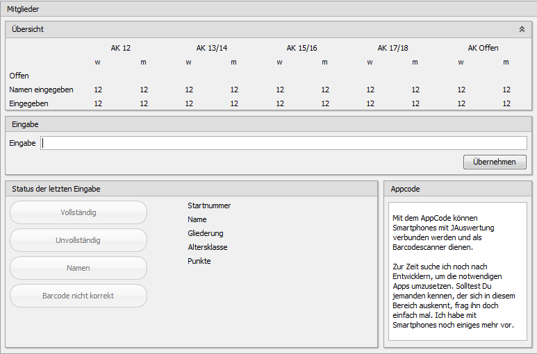
Mannschaftsmitglieder
Die aktuellen Ergebnisse werden im unteren Bereich des Fensters dargestellt. Wenn Sie mehr Platz für andere Teile von JAuswertung benötigen, können Sie über die Optionen die "geteilte Darstellung" deaktivieren, wodurch die Ergebnisse über einen zusätzlichen Knopf in der linken Knopfleiste erreichbar sind und nicht mehr dauerhaft den unteren Fensterbereich belegen.

Ergebnisse
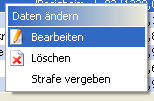
Ergebnisse: Rechtsklick
Durch die Knöpfe im oberen Bereich kann die gewünschte Altersklasse sowie das Geschlecht ausgewählt werden. Die Ansicht der Ergebniss kann auch zur Bearbeitung einzelner Schwimmer bzw. Mannschaften genutzt werden. Über einen Rechtsklick öffnet sich das Popup-Menü, das bereits unter "Meldeliste" beschrieben wurde. Zusätzlich können bestimmte Funktionen per Doppelklick durchgeführt werden. Diese hängen von der Spalte ab, in die geklickt wurde:
Platz, Name, Gliederung, Jahrgang, Punkte, Diff: Öffnet das Fenster zum Bearbeiten eines Schwimmers bzw. einer Mannschaft.
Zeit, Punkte (Je Disziplin): Öffnet ein Fenster zur Eingabe der Zeit für diese Diziplin.
Strafe (Je Disziplin): Öffnet den Assistenten zur Vergabe einer Strafe für diese Disziplin.
HLW: Öffnet ein Fenster zur Eingabe der HLW-Punkte.
Hinweis: Bei der HLW-Eingabe ermöglichen es die Texte "n" und "n.a." einen Schwimmer als "Nicht angetreten" zu markieren.
Hier können die Daten in verschiedenen Varianten gedruckt werden. Die Knöpfe sind nur dann aktiviert, wenn die entsprechenden Daten gedruckt werden können. Zu jeder Druckfunktion existiert eine Vorschau. Über diese kann auch das Seitenlayout eingestellt werden. Diese Einstellungen werden gespeichert und sind beim nächsten Start von JAuswertung wieder verfügbar.
Um die Druckfunktionen übersichtlicher zu gestalten wurden diese gruppiert. Die Gruppen haben die Überschrift "Wettkampf", "Protokoll", "Ergebnisse", "Laufliste", "HLW-Liste" und "Vordrucke". Jede einzelne Gruppe können Sie durch eine Klick auf die Titelzeile ein- bzw. ausblenden, so dass Sie nur die Funktionen sehen, die Sie zur Zeit benötigen. Beim Start von JAuswertung ist nur die Gruppe "Wettkampf" ausgeklappt.

Drucken
Wettkampf:
Meldungen: Ausdruck einer kompakten Liste der Meldungen
Meldezeiten: Ausdruck aller Meldungen mit Meldezeiten
Startunterlagenkontrolle: Ausdruck der zur Kontrolle ausgelosten Teilnehmer bzw. Mannschaften
Dopingkontrolle: Ausdruck der zur Kontrolle ausgelosten Teilnehmer bzw. Mannschaften
Regelwerkseinstellungen: Detailierter Ausdruck aller Einstellung des Regelwerkseditors
Disziplinen: Kompakte Liste aller Disziplinen nach Altersklassen
Statistiken: Statistiken zum Wettkampf wie Teilnehmerzahlen und teilnehmende Gliederungen sowie gliederungssezifische Statistiken
Strafenkatalog: Liste aller Strafen des Strafenkatalogs
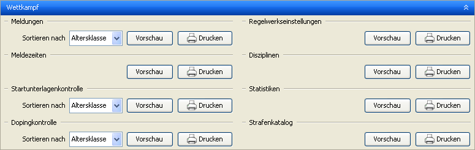
Drucken: Wettkampf
Protokoll:
Protokoll: Vollständiges Protokoll des Wettkampfs gemäß Regelwerk
Veranstaltungsinformationen: Ausdruck der Informationen aus "Datei" → "Eigenschaften"
Kampfrichter: Liste der Kampfrichter
Informationsseite: Ausdruck der Informationsseite aus "Datei" → "Eigenschaften"
Zielrichterentscheide: Liste der Zielrichterentscheide

Drucken: Protokoll
Ergebnisse:
Ergebnisse: Liste der Ergebnisse
Disziplinenwertung: Ergebnisse der Disziplinenwertung
Disziplinenwertung (altersklassenübergreifend): Ergebnisse der Disziplinenwertung, wobei nur nach Disziplinen nicht aber nach Alterklassen unterschieden wird.
Gesamtwertung: Gesamtwertung des Wettkampfs
Siegerliste: Liste der ersten drei Plätze für jede Altersklasse
Siegerliste je Disziplin: Liste der ersten drei Plätze für jede Disziplin.
Medaillenspiegel: Ausdruck eines Medaillenspiegels
Laufzeiten: Tabellarischer Ausdruck der Zeiten nach Läufen
Strafenliste: Liste der vergebenen Strafen
Urkunden: Ausgefüllte Urkunden
Urkunden der Disziplinenwertung: Ausgefüllte Urkunden für die Disziplinenwertung
Weitermeldung: Ausdruck eines Meldebogens mit den Ergebnissen des Wettkampfs
HLW-Ergebnisse: Ausdruck der Ergebnisse der HLW
Schnellste Zeiten: Schnellste Zeiten je Disziplin und Altersklasse
Gebrochene Rec-Werte: Liste der gebrochenen Rec-Werte

Drucken: Ergebnisse
Laufliste:
Laufliste: Tabellarische Laufliste
Sprecherliste: Detaillierte Laufliste für Veranstaltungssprecher
Laufliste für Kampfrichter: Kompakte und übersichtliche Laufliste für Kampfrichter (Wenn die Schriftart nicht zu breit ist, werden zwei Läufe in einer Zeile ausgedruckt)
Laufübersicht: Kurze Übersicht über den Verlauf des Wettkampfs
Laufeinteilung: Liste der Teilnehmer bzw. Mannschaften mit den jeweiligen Starts
Kompakte Laufeinteilung: Kompakte Version der Laufeinteilung (ob diese gedruckt werden kann, hängt von der Laufliste ab)
Bahnenliste: Liste der Starts je Bahn für Zeitnehmer
Ausgefüllte Startkarten: Ausgefüllte Startkarten (Weitere Informationen zum Umgang mit dem Ausdruck finden sich im Dokument "Startkartendruck")
Ausgefüllte Zieleinlaufkarten: Zieleinlaufkarten mit ausgefülltem Lauf und Disziplin (Weitere Informationen zum Umgang mit dem Ausdruck finden sich im Dokument "Startkartendruck")

Drucken: Laufliste
HLW-Liste
HLW-Liste: Tabellarische HLW-Laufliste
Puppenliste: Liste der Teilnehmer je Bahn für HLW-Kampfrichter
Ausgefüllte HLW-Startkarten: Ausgefüllte HLW-Startkarten für Kampfrichter (Weitere Informationen zum Umgang mit dem Ausdruck finden sich im Dokument "Startkartendruck")
Ausgefüllte HLW-Checklisten: Ausgefüllte HLW-Checklisten für Kampfrichter
Ausgefüllte HLW-Startkarten (ohne Zeiten und Bahnen): Ausgefüllte HLW-Startkarten - die Fehler Zeit und Bahn sind jedoch leer (Weitere Informationen zum Umgang mit dem Ausdruck finden sich im Dokument "Startkartendruck")
Ausgefüllte HLW-Checklisten (ohne Zeiten und Bahnen): Ausgefüllte HLW-Checklisten - die Fehler Zeit und Bahn sind jedoch leer

Drucken: HLW-Liste
Vordrucke:
Startkarten: Leere Startkarten
HLW-Startkarten: Leere HLW-Startkarten
HLW-Checkliste: Leere HLW-Checkliste
Zieleinlaufkarten: Leere Zieleinlaufkarten
Fehlermeldekarten: Leere Fehlermeldekarten
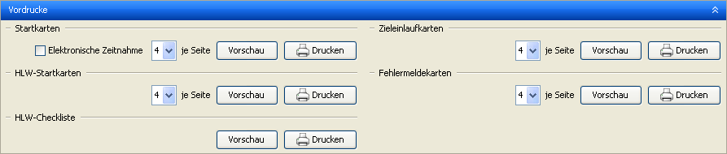
Drucken: Vordrucke
Einige Druckfunktionen werden durch die Ausgabefilter beeinflusst. Genaueres dazu erfahren Sie unter Ausgabefilter bearbeiten und Ausgabefilter auswählen. Wird eine Druckfunktion gerade durch einen Ausgabefilter beeinflusst, wird dies durch ein Symbol mit einem Auge dargestellt.
Tipp 1: Zur Unterstützung beim Drucken von Ergebnissen und Protokollen werden unvollständige Eingaben, d.h. fehlende Zeiten bzw. HLW-Punkte, durch ein gelbes Ausrufezeichen signalisiert.
Tipp 2: Die Startkarten für den Schwimmwettkampf und die HLW werden so gedruckt, dass die Startkarten einer Bahn hintereinander liegen.
Tipp 3: Wenn Ausgabefilter aktiv sind, werden Funktionen, die davon betroffen sind, mit einem Symbol "Auge" markiert.